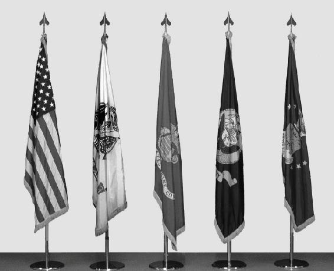
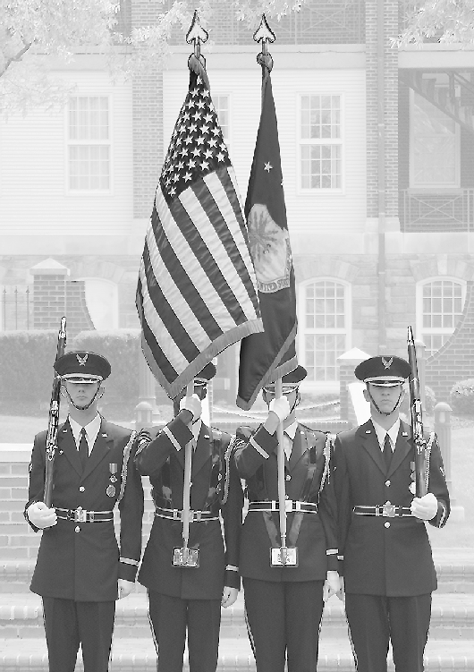
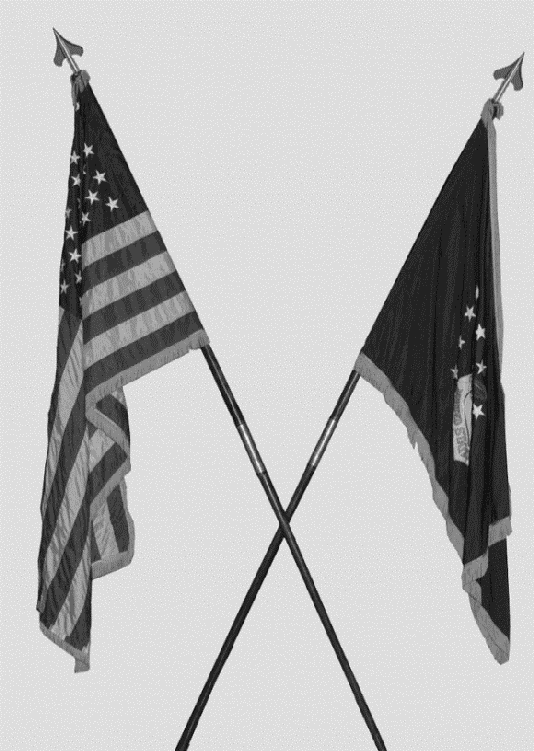
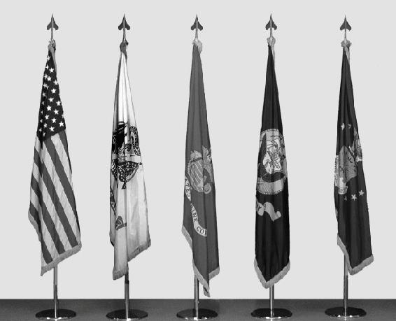
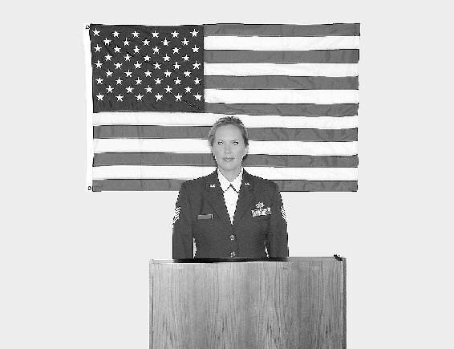
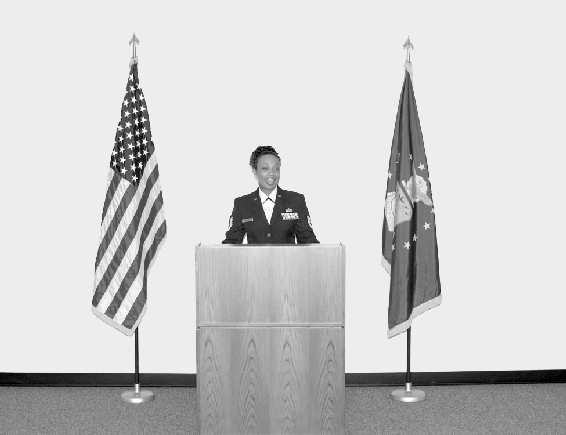

Figure 8.3. U.S. Flag Displayed with Other Flags Radiating from a Central Point.
Figure 8.4. U.S. Flag Displayed in a Line with Other Flags at Equal Height.


|
Figure 8.1. U.S. Flag Carried in Procession with Another Flag. |
|
Figure 8.2. U.S. Flag and Another Flag |
 |
|
 |
Figure 8.3. U.S. Flag Displayed with Other Flags Radiating from a Central Point.
|
|
Figure 8.4. U.S. Flag Displayed in a Line with Other Flags at Equal Height. |
|
|

|
8.2.4.3.3. When flags of two or more nations are displayed, they are flown from separate staffs of the same height. The flags should be of equal size. International usage prescribes the display of the flag of one nation equal to that of another nation in time of peace. The flags are displayed in a line, alphabetically, using the English alphabet, with the U.S. flag at its own right (the observer’s left). When in North Atlantic Treaty Organization countries, North Atlantic Treaty Organization member country flags are displayed in French alphabetical order.
8.2.4.3.4. When the U.S. flag is displayed from a staff projecting horizontally or at an angle from the windowsill, balcony, or front of a building, the union (or blue field) of the flag should be placed at the peak of the staff (Figure 8.6).
8.2.4.3.5. When displayed either horizontally or vertically against a wall, the union should be uppermost and to the flag’s own right; that is, to the observer’s left (Figure 8.7). When displayed in a window, the flag should be displayed in the same way, with the union to the left of observer in the street (Figure 8.8).
Figure 8.6. U.S. Flag Projected from a Building
Figure 8.6. U.S. Flag Projected from a Building
Figure 8.5. U.S. Flag Displayed in a Line with Other Flags at Lower Level.
Figure 8.5. U.S. Flag Displayed in a Line with Other Flags at Lower Level.
Figure 8.7. U.S. Flag Positioned Vertically on Wall or Window
Figure 8.7. U.S. Flag Positioned Vertically on Wall or Window
Figure 8.8. U.S. Flag Positioned Horizontally on Wall or Window.
Figure 8.8. U.S. Flag Positioned Horizontally on Wall or Window.
8.2.4.3.6. When the flag is displayed over the middle of the street, the flag should be suspended vertically with the union to the north on an east and west street or to the east on a north and south street.
8.2.4.3.7. When used on a speaker’s platform, the flag, if displayed flat, should be displayed above and behind the speaker (Figure 8.9). When displayed from a staff in a church or public auditorium, the U.S. flag should hold the position of superior prominence and in the position of honor at the clergyman’s or speaker’s right as he or she faces the audience. Any other flag so displayed should be placed on the left of the clergyman or speaker or to the right of the audience (Figure 8.10).
Figure 8.9. United States Flag Displayed Flat at Speaker's Platform  |
|
Figure 8.10. United States Flag Displayed from a Staff on Stage with Speaker.  |
8.2.4.3.8. When the flag is suspended across a corridor or lobby in a building with only one main entrance, the flag should be suspended vertically with the union of the flag to the observer’s left upon entering. If the building has more than one main entrance, the flag should be suspended vertically near the center of the corridor or lobby with the union to the north when entrances are to the east and west or to the east when entrances are to the north and south. If there are entrances in more than two directions, the union should be to the east. This includes aircraft hangars.
8.2.4.3.9. When three flag staffs are positioned outside a building, there may be two display options. If the flag staffs are in a straight line, then the flags should be of the same height with the U.S. flag to its own right. Use the building looking out to the flags as the point of reference for flag placement when flags are in line. If the flag is positioned on the center staff, then the center staff must be higher than the other two staffs.
8.2.4.3.10. On a closed casket, place the flag lengthwise with the union at the head and over the left shoulder of the deceased (Figure 8.11). When a full-couch casket is opened, remove the flag, fold to the triangular shape of a cocked hat, and place in the lid at the head end of the casket and just above the decedent’s left shoulder. When a half-couch casket is opened, fold the flag on the lower half of the casket in the same relative position as when displayed full length on a closed casket. Do not lower the flag into the grave, and do not allow the flag to touch the ground. The interment flag may be given to the next of kin at the conclusion of the interment.
Figure 8.11. U.S. Flag Draped Over a Closed Casket.
Figure 8.11. U.S. Flag Draped Over a Closed Casket.
8.2.4.3.11. Drape the flag left to right when posted and also when used in official photographs. The blue field is on top with stripes running left to right.
8.2.4.3.12. When painted or displayed on an aircraft or vehicle, the union is toward the front and the stripes trail.
8.2.5. Respect for the U.S. Flag.
No disrespect should be shown to the U.S. flag; the flag will not be dipped to any person or thing. Regimental colors, state flags, and organizational or institutional flags are always dipped as a mark of respect to the U.S. flag. However, the Air Force flag and organizational flags will be dipped as appropriate. Military members will render the military salute as appropriate. At no time will a foreign national flag be dipped.
8.2.5.1. The flag should never be displayed with union down, except as a signal of dire distress in instances of extreme danger to life or property.
8.2.5.2. The flag should never touch anything beneath it, such as the ground, the floor, water, or merchandise. The flag should never be used as the covering for a statue or monument, although the flag could form a distinctive feature in a ceremony of the unveiling of a statue or monument.
8.2.5.3. The flag should never be carried flat or horizontally, but always aloft and free.
8.2.5.4. The flag should never be used as wearing apparel, bedding, or drapery. The flag should never be festooned, drawn back, up, or in folds, but always allowed to fall free (for example, the flag should not be used to cover a speaker’s podium, drape the front of a platform, or for other decoration. A proper substitute is bunting of blue, white, and red, always arranged with the blue above, the white in the middle, and the red below).
8.2.5.5. The flag should never be fastened, displayed, used, or stored in such a manner as to permit the flag to be easily torn, soiled, or damaged.
8.2.5.6. The flag should never be used as a covering for a ceiling.
8.2.5.7. The flag should never have placed upon it, nor on any part of it, nor attached to it any mark, insignia, letter, word, figure, design, picture, or drawing of any nature.
8.2.5.8. The flag should never be used as a receptacle for receiving, holding, carrying, or delivering anything.
8.2.5.9. The flag should never be used for advertising purposes or be embroidered on such articles as cushions or handkerchiefs. Moreover, the flag should not be printed or otherwise impressed on paper napkins or boxes or anything that is designed for temporary use and discard. Advertising signs should not be fastened to a staff or halyard from which the flag is flown.
8.2.5.10. No part of the flag should be used as a costume or athletic uniform. However, a flag patch may be affixed to the uniform of military personnel, firemen, policemen, and members of patriotic organizations. A lapel flag pin, being a replica of the flag, should be worn on the left lapel near the heart. Patches worn on uniforms depicting the U.S. flag should be worn on the left shoulder, with the union to the viewer’s left.
8.2.5.11. The flag should not be displayed on a float in a parade except from a staff.
8.2.5.12. The flag should not be draped over the hood, top, sides, or back of a vehicle, railroad train, or boat. When the flag is displayed on an automobile, the staff should be fixed firmly to the chassis or clamped to the right fender.
8.2.5.13. No other flag or pennant should be placed above or, if on the same level, to the right (observer’s left) of the U.S. flag, except during church services conducted by naval chaplains at sea when the church pennant may be flown above the flag during church services for the personnel of the Navy.
8.2.6. Display of the U.S. Flag at Half-staff.
The U.S. flag is flown at half-staff throughout the U.S., territories and possessions on all Department of Defense buildings, grounds, and naval vessels on several days throughout the year according to DoDI 1005.06, Display of the National Flag at Half-Staff (Figures 8.12 and 8.13).
Figure 8.12. U.S. Flag at Full Staff.
Figure 8.13. U.S. Flag at Half-staff.
Figure 8.12. U.S. Flag at Full Staff.
Figure 8.13. U.S. Flag at Half-staff.
8.2.6.1. The following days apply:
8.2.6.1.1. On Memorial Day, fly the flag at half-staff until noon, then raise to the top of the staff.
8.2.6.1.2. On Peace Officers Memorial Day, 15 May, unless that day is also Armed Forces Day.
8.2.6.1.3. On Patriot Day, 11 September.
8.2.6.1.4. On National Pearl Harbor Remembrance Day, 7 December.
8.2.6.1.5. Each year in honor of the National Fallen Firefighters Memorial Service according to Public Law 107-51. This date is usually the first Sunday in October and is announced annually by Presidential Proclamation.
8.2.6.1.6. On the death of individuals in accordance with AFI 34-1201.
8.2.6.1.7. When so directed by the President of the U.S. or the Secretary of Defense.
8.2.6.2. The responsible military commander ensures the procedures for flying the flag at half-staff are executed as follows:
8.2.6.2.1. The term “half-staff” means the position of the flag when the flag is one-half the distance between the top and bottom of the staff.
8.2.6.2.2. When flown at half-staff, first hoist the flag to the peak for an instant and then lower to the half-staff position. Raise the flag again to the peak position before lowering the flag for the end of the day.
8.2.6.3. The flag is flown at half-staff outside the U.S. on Department of Defense buildings, grounds, and naval vessels even if another nation’s flag is flown full staff next to the U.S. flag.
8.2.6.4. All flags displayed with the U.S. flag are flown at half-staff when the U.S. flag is flown at half-staff, with the exception of foreign national flags, unless the foreign country has granted permission for their flag to also be at half-staff.
8.2.6.5. The Heads of Department of Defense components may direct that the flag be flown at half-staff on buildings, grounds, or naval vessels under their jurisdiction on occasions when they consider the flag be flown at half-staff proper and appropriate. Within the Air Force, this authority is delegated to the installation commander. Any time an installation commander decides to fly the flag at half-staff based on this local authority for a local death, state the reason on the base marquees to avoid confusion.
8.2.7. Care and Disposition of U.S. Flags.
Exercise extreme care to ensure proper handling and cleaning of soiled flags. Professionally mend a torn flag, but destroy a badly torn or tattered flag. Title 4, U.S. Code, Chapter 1, states: "The flag, when it is in such condition that it is no longer a fitting emblem for display, should be destroyed in a dignified way, preferably by burning." There may be instances when a flag is retired from service and preserved because of its historical significance. In this case, the unit must request disposition instructions from the proper authority, such as the installation honor guard or protocol office.
8.2.8. How to Obtain a Flag Flown Over the Capitol.
Constituents may arrange to purchase flags flown over the Capitol by getting in touch with their Senator or Representative. A certificate signed by the Architect of the Capitol accompanies each flag. Ordering procedures are outlined at the following web site: www.aoc.gov/flags.
Figure 8.14. Air Force Seal
Figure 8.14. Air Force Seal
8.3. Department of the Air Force Seal:
8.3.1. Description.
The official Air Force colors of ultramarine blue and Air Force yellow are reflected in the Air Force Seal; the circular background is ultramarine blue, and the trim is Air Force yellow (Figure 8.14). The 13 white stars represent the original 13 colonies. The Air Force yellow numerals under the shield stand for 1947, the year the Department of the Air Force was established. The band encircling the whole design is white edged in Air Force yellow with black lettering reading “Department of the Air Force” on the top and “U.S. of America” on the bottom. Centered on the circular background is the Air Force Coat of Arms, consisting of the crest and shield.
8.3.1.1. The crest consists of the eagle, wreath, and cloud form. The American bald eagle symbolizes the U.S. air power, and appears in natural colors. The wreath under the eagle is made up of six alternate folds of metal (white, representing silver) and light blue. This repeats the metal and color used in the shield. The white clouds behind the eagle denote the start of a new sky.
8.3.1.2. The shield, directly below the eagle and wreath, is divided horizontally into two parts by a nebular line representing clouds. The top part bears an Air Force yellow thunderbolt with flames in natural color that shows striking power through the use of aerospace. The thunderbolt consists of an Air Force yellow vertical twist with three natural color flames on each end crossing a pair of horizontal wings with eight lightning bolts. The background of the top part is light blue representing the sky. The lower part is white representing metal silver.
8.3.2. Authorized and Unauthorized Uses of the Seal and Coat of Arms.
Title 18, United States Code, Section 506, Seals of Departments or Agencies, protects the Air Force seal from unauthorized use. Falsely making, forging, counterfeiting, mutilating, or altering the seal or knowingly using or possessing with fraudulent intent any such altered seal is punishable by law. AFMAN 33-326, Preparing Official Communications, Attachment 2, outlines the authorized users and uses of the seal or any part thereof. The Coat of Arms is authorized for unofficial use when approved by the Secretary of the Air Force of Public Affairs (SAF/PA). This approving authority was delegated to the Air Force Public Affairs Agency (AFPAA), a Field Operating Agency of SAF/PA.
8.4. Official Air Force Symbol:
8.4.1. The Air Force Symbol (Figure 8.15) was designated the official symbol of the U.S. Air Force on 5 May 2004. The Symbol honors the heritage of our past and represents the promise of our future. Furthermore, the symbol retains the core elements of our Air Corps heritage—the “Arnold” wings and star with circle—and modernizes them to reflect our air and space force of today and tomorrow.
8.4.2. The Symbol has two main parts. In the upper half, the stylized wings represent the stripes of our strength—our enlisted men and women. The wings are drawn with great angularity to emphasize our swiftness and power and are divided into six sections which represent our distinctive capabilities—air and space superiority, global attack, rapid global mobility, precision engagement, information superiority, and agile combat support.
Figure 8.15. Air Force Symbol
Figure 8.15. Air Force Symbol
8.4.3. In the lower half are a sphere, a star, and three diamonds. The sphere within the star represents the globe. Moreover, the symbol reminds us of our obligation to secure our Nation’s freedom with global vigilance, reach, and power. The globe also reminds us of our challenge as an expeditionary force to respond rapidly to crises and to provide decisive air and space power worldwide.
8.4.4. The area surrounding the sphere takes the shape of a star. The star has many meanings. The five points represent the components of our one force and family—our Regular Air Force, civilians, Guard, Reserve, and retirees. The star symbolizes space as the high ground of our nation’s air and space force. The rallying symbol in all our wars, the star also represents our officer corps, central to our combat leadership.
8.4.5. The star is framed with three diamonds that represent our core values—integrity first, service before self, and excellence in all we do. The elements come together to form one symbol that presents two powerful images—at once an eagle, the emblem of our Nation; and a medal, representing valor in service to our Nation.
8.4.6. The Air Force Symbol is a registered trademark (registration number 2,767,190) and must be protected against unauthorized use or alterations to approved versions. Approved versions of the Symbol are available for download on the Air Force Portal, under the “Library & Resources” tab. Instructions for the proper use and display of the Symbol can be found in AFI 35-114, Air Force Branding and Trademark Licensing Program, in Department of Defense’s Important Information and Guidelines About the Use of Department of Defense Seals, Logos, Insignia, and Service Medals, and at www.trademark.af.mil. Department of Defense employees and their immediate families may use the Symbol on personal items such as printed materials, clothing, literature, briefings, coins, web sites, and food; however, use must adhere to the resources above. Furthermore, these personal items must not be used in advertising, intended for personal gain, made available for sale, or create perceived/potential endorsements. Any individual, group, organization, or company wishing to use the Symbol beyond the scope of “personal items” should be directed to the Air Force Branding and Trademark Licensing Office.
Section 8C—Professional Behavior
8.5. Respect for the Flag.
The procedures to use when showing respect to the flag and the national anthem include:
8.5.1. When outdoors, all personnel in uniform, except those in formation must face the flag and salute during the raising and lowering of the flag. Upon the first note of the national anthem or “To the Colors,” all personnel in uniform who are not in formation will stand at attention, face the flag (or the sound of the music, if the flag is not visible), and salute. Hold the salute until the last note of the national anthem or “To the Colors” is played.
8.5.2. All vehicles in motion will pull to the side of the road and stop. All occupants sit quietly until the last note of the national anthem or “To the Colors” has played.
8.5.3. When in civilian clothes, face the flag (or the sound of the music if the flag is not visible) and stand at attention with the right hand placed over the heart or render a salute.
8.5.4. If indoors during retreat or reveille, there is no need to stand or salute. However, everyone must stand during the playing of the national anthem before a showing of a movie while in the base theater. When listening to a radio or watching television, no specific action is necessary. Additionally, a folded flag is considered cased; therefore, a salute is not necessary.
8.6. Saluting.
The salute is a courteous exchange of greetings, with the junior member always saluting the senior member first. A salute is also rendered to the flag as a sign of respect. Any Airman, NCO, or officer recognizing a need to salute or a need to return a salute may do so anywhere at any time. When returning or rendering an individual salute, the head and eyes are turned toward the flag or person saluted. Guidance when exchanging salutes includes:
8.6.1. Outdoors.
Salutes are exchanged upon recognition between officers or warrant officers and enlisted members of the Armed Forces when they are in uniform. Saluting outdoors means salutes are exchanged when the persons involved are outside of a building. For example, if a person is on a porch, a covered sidewalk, a bus stop, a covered or open entryway, or a reviewing stand, the salute will be exchanged with a person on the sidewalk outside of the structure or with a person approaching or in the same structure. This applies both on and off military installations. The junior member should initiate the salute in time to allow the senior officer to return it. To prescribe an exact distance for all circumstances is not practical; however, good judgment should dictate when salutes are exchanged. Superiors carrying articles in both hands need not return the salute, but should nod in return or verbally acknowledge the salute. If the junior member is carrying articles in both hands, verbal greetings should be exchanged. Also, use the same procedures when greeting an officer of a foreign nation. Use these procedures in:
8.6.1.1. Formation. Members do not salute or return a salute unless given the command to do so. The person in charge salutes and acknowledges salutes for the whole formation.
8.6.1.2. Groups, But Not in Formation. When a senior officer approaches, the first individual noticing the officer calls the group to attention. All members face the officer and salute. If the officer addresses an individual or the group, all remain at attention (unless otherwise ordered) until the end of the conversation, at which time they salute the officer.
8.6.1.3. Public Gatherings. Salutes between individuals are not required in public gatherings, such as sporting events, meetings, or when a salute would be inappropriate or impractical.
8.6.1.4. Moving Military Vehicles. Exchange of salutes between military pedestrians (including gate sentries) and officers in moving military vehicles is not mandatory. However, when officer passengers are readily identifiable (for example, officers in appropriately marked staff vehicles), the salute must be rendered.
8.6.1.5. The Presence of Civilians. Persons in uniform may salute civilians. The President of the U.S., as Commander in Chief of the Armed Forces, is always accorded the honor of a salute. AFI 34-1201 provides additional guidance. In addition, if the exchange of salutes is otherwise appropriate, customs encourage military members in civilian clothes to exchange salutes upon recognition.
8.6.1.6. A Work Detail. In a work detail, individual workers do not salute. The person in charge salutes for the entire detail.
8.6.1.7. Military Funeral. When at a military funeral in uniform, salute the caisson or hearse as it passes and the casket as it is carried by your position. You also salute during the firing of volleys and the playing of “Taps.”
8.6.2. Indoors.
Except for formal reporting, salutes are not rendered.
8.7. Military Etiquette.
Etiquette is defined as common, everyday courtesy. The military world, like the civilian world, functions more smoothly and pleasantly when members practice good manners.
8.7.1. Simple things like saying “please” and “thank you” help the organization run smoother because people respond more enthusiastically when asked in a courteous manner to do something. They also appreciate knowing their efforts are recognized when told “thank you.”
8.7.2. One of the most valuable habits anyone can develop is to be on time for appointments. Granted, sometimes a person cannot avoid being late. When this happens, the best course of action is to call ahead or to reschedule the appointment. Do not keep others waiting.
8.7.3. Address civil service employees properly. As a rule, address them appropriately as “Mr.,” “Mrs.,” “Miss,” or “Ms.” and their last name, unless requested to do otherwise. Always address a superior formally. This is especially important in most foreign countries where using first names on the job is much more limited than in the U.S.
8.7.4. Don’t gossip. A discussion of personal habits, problems, and activities (real or rumored) of others often results in quarrels and disputes among people who work together. The morale of any unit may suffer because of feuds that arise from gossip. The best policy is not to gossip and to discourage others from gossiping.
8.7.5. Use proper telephone etiquette. Always be polite and identify yourself and your organization. When an individual is not available to take a call, ask: “May I take a message?” or “Is there something I may help you with?” If taking a message to return a call, write down the individual’s name, organization, telephone number, the message, and then pass this information along to the intended recipient.
8.7.6. Do not lean or sit on desks. Also, do not lean back in a chair or put feet on desks. This type of conduct doesn’t present a professional military image.
8.7.7. In general, use common sense, be considerate of other people, and insist your subordinates do the same.
8.8. Courtesies to Other Services:
8.8.1. The collective efforts of the Air Force, Army, Navy, Marines, and Coast Guard provide for the defense of the country against aggression. All Services are part of the military team; therefore, extend the same military courtesies to members of the other Services. While there is a friendly natural rivalry between the Services, military courtesies among Services remain the same. Thus, the members of the other Services are as much comrades-in-arms as are any Airmen.
8.8.2. This is equally true of the friendly armed forces of the United Nations. Salute all commissioned officers and pay the same respect to the national anthems and flags of other nations as rendered the U.S. national anthem and flag. While not necessary to learn the identifying insignia of the military grades of all nations, you should learn the insignia of the most frequently contacted nations, particularly during an overseas assignment or deployment.
8.9. Respect and Recognition:
8.9.1. Common Acts of Courtesy.
Common acts of courtesy among all Air Force personnel aid in maintaining discipline and promoting the smooth conduct of affairs in the military establishment. When courtesy falters within a unit, discipline ceases to function, and accomplishing the mission is endangered. Many of the Air Force courtesies involve the salute. There are, however, many other courtesies commonly extended to superiors, subordinates, and working associates. Some acts of courtesies include:
8.9.1.1. Giving the senior person, enlisted or commissioned, the position of honor when walking, riding, or sitting with him or her at all times. The junior person takes the position to the senior’s left.
8.9.1.2. When reporting to an officer indoors, knock once and enter when told to do so. Upon entering, march to approximately two paces from the officer or desk, halt, salute, and report in this manner: “Sir (Ma’am), Airman Smith reports as ordered,” or “Sir (Ma’am), Airman Smith reports.” When the conversation is completed, execute a sharp salute and hold until the officer acknowledges the salute, then perform the appropriate facing movements and depart.
8.9.1.3. Unless told otherwise, rise and stand at attention when a senior official enters or departs a room. If more than one person is present, the person who first sees the officer calls the group to attention. However, if an officer is already in the room who is equal to or has a higher rank than the officer entering the room, do not call the room to attention.
8.9.1.4. Military personnel enter automobiles and small boats in reverse order of rank. Juniors will enter a vehicle first and take their appropriate seat on the senior’s left. The senior officer will be the last to enter the vehicle and the first to leave.
8.9.2. Terms of Address. For the proper terms of address, refer to Figure 8.16.
Figure 8.16. Terms of Address. |
||
Rank |
Abbreviations |
Terms of Address |
SNCO Tier |
||
Chief Master Sergeant of the Air Force |
CMSAF |
Chief Master Sergeant of the Air Force or Chief |
Chief Master Sergeant |
CMSgt |
Chief Master Sergeant or Chief |
Senior Master Sergeant |
SMSgt |
Senior Master Sergeant or Sergeant |
Master Sergeant |
MSgt |
Master Sergeant or Sergeant |
NCO Tier |
||
Technical Sergeant |
TSgt |
Technical Sergeant or Sergeant |
Staff Sergeant |
SSgt |
Staff Sergeant or Sergeant |
Airman Tier |
||
Senior Airman |
SrA |
Senior Airman or Airman |
Airman First Class |
A1C |
Airman First Class or Airman |
Airman |
Amn |
Airman |
Airman Basic |
AB |
Airman Basic or Airman |
Section 8D—Drill and Ceremony
8.10. Flag Ceremonies:
8.10.1. Reveille.
The signal for the start of the official duty day is the reveille. Because the time for the start of the duty day varies between bases, the commander designates the specified time for reveille. If the commander desires, a reveille ceremony may accompany the raising of the flag. This ceremony takes place after sunrise near the base flagstaff. In the unit area, reveille is normally held using the formation of squadron in line. This formation is used when a reveille ceremony is not held at the base flagstaff. Procedures for reveille include:
8.10.1.1. Shortly before the specified time, Airmen march to a pre-designated position near the base flagstaff, halt, face toward the flagstaff, and dress. The flag security detail arrives at the flagstaff at this time and remains at attention.
8.10.1.2. The unit commander (or senior participant) commands “Parade, REST.”
8.10.1.3. At the specified time for reveille, the unit commander commands “SOUND REVEILLE.” The flag detail assumes the position of attention, moves to the flagstaff, and attaches the flag to the halyards.
8.10.1.4. After reveille is played, the unit commander commands “Squadron, ATTENTION” and “Present, ARMS” and then faces the flagstaff and executes present arms. On this signal, the national anthem or “To the Colors” is sounded.
8.10.1.5. On the first note of the national anthem or “To the Colors,” the flag security detail begins to raise the flag briskly. The senior member of the detail holds the flag to keep the flag from touching the ground.
8.10.1.6. The unit commander holds the salute until the last note of the national anthem or “To the Colors” is played. Then he or she executes order arms, faces about, and commands “Order, ARMS.” The Airmen are then marched back to the dismissal area.
8.10.2. Raising the Flag:
8.10.2.1. When practical, a detail consisting of one NCO and two Airmen hoists the flag. This detail should carry sidearms if the special equipment of the guard includes sidearms.
8.10.2.2. The detail forms in line with the NCO carrying the flag in the center. The detail then marches to the flagstaff and halts, and the flag is attached to the halyards. The flag is always raised and lowered from the leeward side of the flagstaff. The two Airmen attend the halyards, taking a position facing the staff to hoist the flag without entangling the halyards.
8.10.2.3. The NCO continues to hold the flag until hoisted clear of his or her grasp, taking particular care that no portion of the flag touches the ground. When the flag is clear of the grasp, the NCO comes to attention and executes present arms.
8.10.2.4. On the last note of the national anthem, “To the Colors,” or after the flag has been hoisted to the staff head, all members of the detail execute order arms on command of the senior member. The halyards are then secured to the cleat of the staff or, if appropriate, the flag is lowered to half-staff and the halyards are secured. The detail is formed again and then marches to the dismissal area.
8.10.3. Retreat Ceremony:
8.10.3.1. The retreat ceremony serves a twofold purpose: signals the end of the official duty day and serves as a ceremony for paying respect to the U.S. flag. Because the time for the end of the duty day varies, the commander designates the time for the retreat ceremony. The retreat ceremony may take place at the squadron area, on the base parade ground, or near the base flagstaff. If conducted within the squadron area, the ceremony usually does not involve a parade. If conducted at the base parade ground, retreat may be part of the parade ceremony. For retreat ceremonies conducted at the base flagstaff, the units participating may be formed in line or massed, depending on the size and number of units and the space available.
8.10.3.2. Shortly before the specified time for retreat, the band and Airmen participating in the ceremony are positioned facing the flagstaff and dressed. If marching to and from the flagstaff, the band precedes the Airmen participating in the ceremony.
8.10.3.3. If the band and Airmen march to the flagstaff, a flag security detail also marches to the flagstaff and halts, and the senior member gives the command “Parade, REST” to the security detail.
8.10.3.4. As soon as the Airmen are dressed, the commander commands “Parade, REST.” The commander then faces the flagstaff, assumes the position of the Airmen, and waits for the specified time for retreat.
8.10.3.5. At the specified time, the commander orders the bandleader to sound retreat by commanding “SOUND RETREAT.”
8.10.3.6. The band plays retreat. If a band is not present, recorded music is played over the base public address system. During the playing of retreat, junior members of the flag security detail assume the position of attention and move to the flagstaff to arrange the halyards for proper lowering of the flag. Once the halyards are arranged, the junior members of the flag security detail execute parade rest in unison.
8.10.3.7. Uniformed military members not assigned to a formation face the flag (if visible) or the music and assume the position of parade rest on the first note of retreat. Upon completion of retreat, they should assume the position of attention and salute on the first note of the national anthem or “To the Colors.”
8.10.3.8. After the band plays retreat, the commander faces about and commands “Squadron (Group, etc.), ATTENTION.”
8.10.3.9. The commander then commands “Present, ARMS.” As soon as the Airmen execute present arms, the commander faces to the front and also assumes present arms. The members of the flag security detail execute present arms on command of the commander.
8.10.3.10. The band plays the national anthem, or the bugler plays “To the Colors.” The junior members of the flag security detail lower the flag slowly and with dignity.
8.10.3.11. The commander executes order arms when the last note of the national anthem or “To the Colors” is played and the flag is securely grasped. The commander faces about, gives the Airmen “Order, ARMS,” and then faces to the front.
8.10.3.12. The flag security detail folds the flag as illustrated in Figure 8.17. The senior member of the detail remains at attention while the flag is folded unless needed to control the flag.
8.10.3.13. When the flag is folded, the flag security detail, with the senior member on the right and the flag bearer in the center, marches to a position three paces from the commander. (Note: In an informal ceremony, the detail marches three paces from the officer of the day.) The senior member salutes and reports “Sir (Ma’am), the flag is secured.” The commander returns the salute, and the flag security detail marches away. The Airmen are then marched to their areas and dismissed.
8.17. Folding the U.S. Flag
8.17. Folding the U.S. Flag
8.10.4. Lowering the Flag:
8.10.4.1. When practical, the persons lowering the flag should be one NCO and three Airmen for the all-purpose flag and one NCO and five Airmen for the installation flag.
8.10.4.2. The detail is formed and marched to the flagstaff. The halyards are detached and attended from the leeward side.
8.10.4.3. On the first note of the national anthem or “To the Colors,” the members of the detail not lowering the flag execute present arms. The lowering of the flag is coordinated with the playing of the music so the two are completed at the same time.
8.10.4.4. The senior member commands the detail “Order, ARMS” when the flag is low enough to be received. If at half-staff, briskly hoist the flag to the staff head while retreat is sounded and then lower on the first note of the national anthem or “To the Colors.”
8.10.4.5. The flag is detached from the halyards and folded. The halyards are secured to the staff.
8.10.5. Pledge of Allegiance to the Flag.
The Pledge of Allegiance to the flag, “I pledge allegiance to the flag of the U.S. of America and to the Republic for which it stands, one Nation under God, indivisible, with liberty and justice for all” should be rendered by standing at attention and facing the flag. When not in uniform, persons should remove any non-religious headdress with their right hand and hold it at the left shoulder, with the hand being over the heart. Persons in uniform should remain silent, face the flag, and render the military salute if outdoors and indoors if in formation and wearing appropriate headdress. If indoors and without headdress, military members should stand at attention, remain silent, and face the flag. Military members in uniform do not recite the Pledge of Allegiance to the flag.
8.10.6. Flag Folding Ceremony.
Although several flag folding ceremony options are offered by various national interest groups, these are not official Air Force ceremonies. According to Title 4, United States Code, no specific meaning is assigned to the folds of the flag. The Air Force developed a script that provides a historical perspective on the flag. There are no ceremonies in the Air Force requiring a script to be read when the flag is folded. However, when a flag folding ceremony is desired and conducted by Air Force personnel at any location, on or off an installation, this script is the only one that may be used. Refer back to Figure 8.17 for the proper method for folding the U.S. flag and Figure 8.18 for a copy of this script.
Figure 8.18. Flag Folding Ceremony. |
Flag Folding Ceremony Air Force Script For more than 200 years, the American flag has been the symbol of our Nation’s unity, as well as a source of pride and inspiration for millions of citizens. Born on June 14, 1777, the Second Continental Congress determined that the flag of the U.S. be 13 stripes, alternating between 7 red and 6 white; and that the union be 13 stars, white in a blue field representing a new constellation. (1) Between 1777 and 1960, the shape and design of the flag evolved into the flag presented before you today. The 13 horizontal stripes represent the original 13 colonies, while the stars represent the 50 states of the Union. The colors of the flag are symbolic as well; red symbolizes hardiness and valor; white signifies purity and innocence; and blue represents vigilance, perseverance, and justice. (1) Traditionally, a symbol of liberty, the American flag has carried the message of freedom, and inspired Americans, both at home and abroad. In 1814, Francis Scott Key was so moved at seeing the Stars and Stripes waving after the British shelling of Baltimore’s Fort McHenry that he wrote the words to The Star Spangled Banner. (2) In 1892 the flag inspired Francis Bellamy to write the “Pledge of Allegiance,” our most famous flag salute and patriotic oath. (2) In July 1969 the American flag was “flown” in space when Neil Armstrong planted it on the surface of the moon. (2) Today, our flag flies on constellations of Air Force satellites that circle our globe, and on the fin flash of our aircraft in harm’s way in every corner of the world. Indeed, it flies in the heart of every Airman who serves our great Nation. The sun never sets on our U.S. Air Force, nor on the flag we so proudly cherish. (2) Since 1776, no generation of Americans has been spared the responsibility of defending freedom… Today’s Airmen remain committed to preserving the freedom that others won for us for generations to come. By displaying the flag and giving it a distinctive fold we show respect to the flag and express our gratitude to those individuals who fought, and continue to fight for freedom, at home and abroad. Since the dawn of the 20th century, Airmen have proudly flown the flag in every major conflict on lands and skies around the world. It is their responsibility…our responsibility…to continue to protect and preserve the rights, privileges, and freedoms that we, as Americans, enjoy today. The U.S. flag represents who we are. It stands for the freedom we all share and the pride and patriotism we feel for our country. We cherish its legacy as a beacon of hope to one and all. Long may it wave. Legend: (1) From a report Secretary of Congress Robert Thompson wrote to define the Seal of our Nation (1777). (2) Based upon historical facts. |
8.11. Air Force Ceremonies.
The Air Force has many different types of ceremonies that are unique customs of our military profession. Some of these ceremonies are very formal and elaborate, while others are quite simple and personal. Award, decoration, promotion, reenlistment, and retirement ceremonies are a few of the most common within the Air Force.
8.11.1. Award Ceremony.
An award ceremony affords an opportunity to recognize a member’s accomplishments. The commander or other official determines whether to present an award at a formal ceremony or to present it informally. Many units present awards during commander’s call. Because there are no specific guidelines for an award presentation, commanders and supervisors must ensure the presentation method reflects the significance of the award.
8.11.2. Decoration Ceremony:
8.11.2.1. Basic Guidelines. Decoration ceremonies formally recognize service members for meritorious service, outstanding achievement, or heroism. A formal and dignified ceremony is necessary to preserve the integrity and value of decorations. When possible, the commander should personally present the decoration. Regardless of where the presentation is conducted, the ceremony is conducted at the earliest possible date after approval of the decoration. All military participants and attendees should wear the uniform specified by the host. If in doubt, the Service Dress rather than the Airman Battle Uniform is recommended. At the commander’s discretion, a photographer may take pictures during the ceremony.
8.11.2.2. Procedures. Although decoration ceremonies may differ slightly from one unit to another, they normally begin by announcing “ATTENTION TO ORDERS.” All members in attendance stand at attention and face the commander and the recipient. The commander’s assistant reads the citation while the commander and recipient stand at attention. After the citation is read, the commander and recipient face each other, and the commander affixes the medal on the individual’s uniform. The commander next extends personal congratulations and a handshake while presenting the decoration certificate. The recipient salutes the commander, and the commander returns the salute to conclude the formal part of the ceremony. Attendees are then invited to personally congratulate the recipient and enjoy any refreshments provided.
8.11.3. Promotion Ceremony:
8.11.3.1. Basic Guidelines. Promotions are significant events in the lives of military people. Commanders and supervisors are responsible for ensuring their personnel receive proper recognition. Many of the guidelines for promotion ceremonies are the same as for decoration ceremonies. Because most promotions are effective the first day of the month, the promotion ceremony is customarily conducted on the last duty day before the promotion. Some bases hold a base-wide promotion for all promotees; many organizations have operating instructions detailing how promotion ceremonies will be conducted.
8.11.3.2. Procedures. The national anthem, reaffirmation of the Oath of Enlistment, and the Air Force Song are options that add decorum to the event.
8.11.4. Reenlistment Ceremony:
8.11.4.1. Basic Guidelines. Unit commanders will honor all reenlistees through a dignified reenlistment ceremony. The Airman may request any commissioned officer to perform the ceremony and may invite guests. The member’s immediate family should be invited. This reinforces the fact that when a member makes a commitment to the Air Force, the family is also making a commitment. Any regular, reserve, guard, or retired commissioned officer of the U.S. Armed Forces may perform the ceremony, which may be conducted in any place that lends dignity to the event. The U.S. flag must form a backdrop for the participants. Reenlistees and reenlisting officers must wear an authorized uniform for the ceremony. Exception: The uniform requirement is optional for retired officers.
8.11.4.2. Procedures. The core of the ceremony is the Oath of Enlistment. The oath is recited by the officer and repeated by the reenlistee. The reenlistee and the officer administering the oath must be physically collocated during the ceremony. Once completed, the officer congratulates the reenlistee and invites the other attendees to do the same. Refreshments may be served.
8.11.5. Retirement Ceremony:
8.11.5.1. Basic Guidelines. Recognition upon retirement is a longstanding tradition of military service. Each commander makes sure members leave with a tangible expression of appreciation for their contributions to the Air Force mission and with the assurance they will continue to be a part of the Air Force family in retirement. Anyone involved in planning a retirement should consult AFI 36-3203, Service Retirements, for complete details. The following paragraphs are extracts from AFI 36-3203:
8.11.5.1.1. Commanders are responsible for ensuring members have a retirement ceremony to recognize their contributions. They must offer the retiring member the courtesy of a formal ceremony in keeping with the customs and traditions of the Service. If possible, a general officer conducts the ceremony. Ceremonies held as part of formal military formations, such as retreats and parades, are further encouraged if conditions permit.
8.11.5.1.2. During the retirement ceremony, the member receives a certificate of retirement, a U.S. Flag, the Air Force retired lapel button, Certificate of Appreciation for Service in the Armed Forces of the U.S., and appropriate awards, decorations, honors, and letters of appreciation. If possible, avoid using “dummy” elements that the member cannot keep. Family members and friends should be invited and encouraged to attend the ceremony. Furthermore, the member’s spouse is customarily presented with a certificate of appreciation for the support and sacrifices made during the member’s career.
8.11.5.1.3. Commanders follow formal ceremony procedures unless the member prefers otherwise. If the member doesn’t want a formal ceremony or for any reason (leave or hospitalization) can’t be present for duty on the retirement date, the commander personally presents all decorations and any awards or honors to the member at another time. The retirement certificate is not mailed to the member’s retirement address unless there is no other choice.
8.11.5.2. Procedures. AFPAM 34-1202 outlines an approved sequence of events for indoor retirement ceremonies. Figure 8.19 provides a general guideline that may be used to assist in planning a retirement ceremony as well as many other ceremonies.
Figure 8.19. General Guideline for Planning a Retirement Ceremony. |
|
8.11.5.2.1. Common ceremonies recognizing an individual, such as a retirement ceremony, routinely combine official actions that maintain the dignity and respect of long standing Air Force traditions with a member’s desire to personalize the ceremony for family and invited guests.
8.12. Special Ceremonies and Events.
The Dining-In, Dining-Out, and Order of the Sword Induction ceremonies are social events that have become valued traditions in the military.
8.12.1. The Dining-In and Dining-Out:
8.12.1.1. The only difference between a Dining-In and Dining-Out is that nonmilitary spouses, friends, and civilians may attend a Dining-Out. The Dining-In is a formal dinner for military members only. The present Dining-In format had its beginnings in the Air Corps when General Henry H. “Hap” Arnold held his famous wingdings. The association of Army Air Corps personnel with the British and their Dining-In during World War II also encouraged their popularity in the Air Force. Members now recognize the Dining-In as an occasion where ceremony, tradition, and good fellowship serve an important purpose.
8.12.1.2. Specifically, these ceremonies provide an occasion for Air Force members to meet socially at formal military functions. They also provide an excellent means of saying farewell to departing members and welcoming new ones, as well as providing the opportunity to recognize individual and unit achievements. These are effective in building and maintaining high morale and esprit de corps. Military members who attend these ceremonies must wear the mess dress or the semiformal uniform. Civilians wear the dress specified in the invitations.
8.12.2. The Order of the Sword Induction Ceremony.
Induction into the Order of the Sword is an honor reserved for individuals who have provided outstanding leadership and support to enlisted members. The induction ceremony occurs at a formal evening banquet held to honor the inductee as a “Leader among Leaders and an Airman among Airmen.” The entire event is conducted with the dignity that reflects its significance as the highest recognition enlisted member can bestow on anyone. Each command has an Order of the Sword and develops their own selection and induction procedures.
8.13. Drill:
8.13.1. Introduction to Drill.
For the purpose of drill, Air Force organizations are divided into elements, flights, squadrons, groups, and wings. Drill consists of certain movements by which the flight or squadron is moved in an orderly manner from one formation to another or from one place to another. Standards such as the 24-inch step, cadence of 100 to 120 steps per minute, distance, and interval were established to ensure movements are executed with order and precision. The task of each person is to learn these movements and execute each part exactly as described. Individuals must also learn to adapt their own movements to those of the group. Everyone in the formation must move together on command.
8.13.2. Drill and Ceremony.
While the term “ceremony” was defined earlier in this chapter, you should be note that certain ceremonies use drill. In these events, ceremonies not only honor distinguished persons and recognize special events, but also demonstrate the proficiency and training state of the Airmen. Ceremonies are an extension of drill activities. The precision marching, promptness in responding to commands, and teamwork developed on the drill field determine the appearance and performance of the group in ceremonies. The following paragraphs cover only the basic aspects of drill. For more information, see AFMAN 36-2203, Drill and Ceremonies.
8.13.3. Types of Commands:
8.13.3.1. Drill Command. A drill command is an oral order that usually has two parts: the preparatory command and the command of execution. The preparatory command explains what the movement will be. When calling a unit to attention or halting a unit’s march, the preparatory command includes the unit designation. In the command “Flight, HALT,” the word “Flight” is the preparatory command and, at the same time, designates the unit. The command of execution follows the preparatory command. The command of execution explains when the movement will be carried out. In “Forward, MARCH,” the command of execution is “MARCH.”
8.13.3.2. Supplementary Command. A supplementary command is given when one unit of the element must execute a movement different from other units or the same movement at a different time. Examples include: “CONTINUE THE MARCH” and “STAND FAST.”
8.13.3.3. Informational Command. An informational command has no preparatory command or command of execution and is not supplementary; this command is used to direct others to give commands. Examples are: “PREPARE FOR INSPECTION” and “DISMISS THE SQUADRON.”
8.13.3.4. Mass Commands. The mass commands help develop confidence, self-reliance, assertiveness, and enthusiasm by making the individual recall, give, and execute proper commands. Mass commands are usually confined to simple movements, with short preparatory commands and commands of execution carried out simultaneously by all elements of a unit. Each person is required to give commands in unison with others as if this person alone were giving the commands to the entire element. The volume of the combined voices encourages every person to perform the movement with snap and precision.
8.13.4. General Rules for Giving Commands.
When giving commands, the commander is at the position of attention. Good military bearing is necessary for good leadership. While marching, the commander must be in step with the formation at all times. The commander faces the Airmen when giving commands except when the element is part of a larger drill element or when the commander is relaying commands in a ceremony.
8.13.5. Drill Positions:
8.13.5.1. Attention. To come to attention, bring the heels together smartly and on line. Place the heels as near each other as the conformation of the body permits and ensure the feet are turned out equally to form a 45-degree angle. Keep the legs straight without stiffening or locking the knees. The body is erect with hips level, chest lifted, back arched, and shoulders square and even. Arms hang straight down alongside the body without stiffness and the wrists are straight with the forearms. Place thumbs, which are resting along the first joint of the forefinger, along the seams of the trousers or sides of the skirt. Hands are cupped (but not clenched as a fist) with palms facing the leg. The head is kept erect and held straight to the front, with the chin drawn slightly so the axis of the head and neck is vertical; eyes are to the front with the line of sight parallel to the ground. The weight of the body rests equally on the heels and balls of both feet. Silence and immobility are required.
8.13.5.2. Rest Positions. There are four positions of rest: parade rest, at ease, rest, and fall out. The commander and members of the formation must be at the position of attention before going to any of the rest positions. To resume the position of attention from any of the rests (except fall out, for which the commander uses the command “FALL IN”), the command is “Flight, ATTENTION.”
8.13.5.2.1. Parade Rest. (The command is “Parade, REST.”) On the command “REST,” members of the formation raise the left foot from the hip just enough to clear the ground and move smartly to the left so the heels are 12 inches apart, as measured from the inside of the heels. Keep the legs straight but not stiff and the heels on line. As the left foot moves, bring the arms, fully extended, to the back of the body, uncupping the hands in the process; extend and join the fingers, pointing them toward the ground. Face the palms outwards. Place the right hand in the palm of the left, right thumb over the left to form an “X.” Keep the head and eyes straight ahead and remain silent and immobile.
8.13.5.2.2. At Ease. On the command “AT EASE,” members of the formation may relax in a standing position, but they must keep the right foot in place. Their position in the formation will not change; silence is maintained.
8.13.5.2.3. Rest. On the command “REST,” the same requirements for at ease apply, but moderate speech is permitted.
8.13.5.2.4. Fall Out. On the command “FALL OUT,” individuals may relax in a standing position or break ranks. They must remain in the immediate area; no specific method of dispersal is required. Moderate speech is permitted.
8.13.6. The Flight as the Basic Drill Unit.
The first phase of drill involves teaching basic movements, facings, and positions either as an individual or as a member of an element. The second phase of drill merges the individual with others to form a flight in which base formations and marching are learned. The flight is composed of at least two, but no more than four, elements. This formation is the most practical drill group.
8.13.7. Formation of the Flight:
8.13.7.1. A flight forms in a line formation at the command of “FALL IN” (Figure 8.20). Note: Usually, the flight sergeant forms and dismisses the flight formation.
8.13.7.2. On this command, each Airman will fall in and establish their dress, cover, interval, and distance. Once established, each Airman executes an automatic ready front on an individual basis and remains at the position of attention.
8.13.7.3. The flight commander will then size the flight. Once all members are properly sized and in column formation (Figure 8.21), the flight commander brings the flight back to line formation.
8.13.7.4. To align the flight in line formation, the commands are “Dress Right, DRESS” and “Ready, FRONT.”
8.13.7.5. The flight commander verifies the alignment of each rank then marches to three paces beyond the front rank, faces toward the flight, and commands “Ready, FRONT.” With as few movements as possible, the flight commander then takes the normal position in front of the flight by the most direct route.
Figure 8.20. Flight in Line Formation.
Figure 8.20. Flight in Line Formation.
8.13.8. Open Ranks:
Figure 8.21. Flight in Column Formation.
Figure 8.21. Flight in Column Formation.
8.13.8.1. The command “Open Ranks, MARCH” is only given to a formation when in line at normal interval. On the command “MARCH,” the fourth rank stands fast and automatically executes dress right dress. The third rank takes one pace, the second rank takes two, and the first rank takes three paces forward. The flight commander aligns the flight, then commands “Ready, FRONT.”
8.13.8.2. The inspector and commander proceed to inspect the flight, if required.
8.13.8.3. After inspecting the entire flight, the inspector marches off to the right flank (element leaders) of the flight. The flight commander calls the flight to attention. The flight commander then commands “Close Ranks, MARCH.” On the command “MARCH,” the first rank stands fast. The second rank takes one pace forward and halts at the position of attention. The third and fourth ranks take two and three paces forward, respectively, and halt at attention.
Section 8E—Honor Guard, Protocol, Distinguished Visitors, and Military Ceremonies
8.14. Base Honor Guard Program:
8.14.1. The primary mission of the base honor guard program is to employ, equip, and train Air Force members to provide professional military funeral honors for active duty, retired members, and veterans of the U.S. Air Force. The Base Honor Guard Program is a mandatory Air Force program and is the responsibility of the installation commander. Members are usually volunteers from the installation host and tenant units, with selections generally coming from the installation’s Airman Basic to Technical Sergeant pool. The base honor guard emphasizes the importance of military customs and courtesies, dress and appearance, and drill and ceremonies.
8.14.2. The origins of the base honor guard can be traced to May 1948 when Headquarters Command, U.S. Air Force, directed the creation of an elite ceremonial unit comparable to those of the other Services. The first base honor guard was activated within the 1100th Air Police Squadron, Bolling Field, Washington District of Columbia, and was responsible for maintaining an Air Force ceremonial capability in the National Capitol Region. However, other Air Force installations worldwide approached ceremonial responsibilities and military funeral honors quite differently.
8.14.3. In January of 2000, public law was implemented, providing for all veterans to receive, at a minimum, a funeral ceremony that includes the folding of a U.S. flag, presentation of the flag to the veteran’s family, and the playing of “Taps.”
8.15. Protocol Defined.
Protocol is the set of rules prescribing good manners in official life and in ceremonies involving governments and nations and their representatives. Protocol is an internationally recognized system of courtesy and respect. Protocol for the military and government agencies is a code of traditional precedence, courtesy, and etiquette in matters of military, diplomatic, official, and celebratory ceremonies. Military protocol encompasses the knowledge, accumulation and application of established service customs. In modern practice, protocol combines the traditional codes of conduct with contemporary etiquette and courtesy. The goal is to avoid disputes, insults, embarrassment, and distractions by following a set of objective and generally accepted criteria. As times change, so do the manners of the people; protocol must keep pace with developing official life. Though only a guide, the following sections will help you avoid protocol pitfalls.
8.16. Distinguished Visitors (DV):
8.16.1. A DV may be defined as any: (1) general or flag officer; (2) government official with rank equivalent to a brigadier general or higher; (3) foreign military officer or civilian designated a DV by the Under Secretary of the Air Force for International Affairs (SAF/IA); and (4) visitor or group designated by the commander. Also, persons of lower rank, but in certain positions, may be given DV status. At base level, for example, colonels, civilian equivalents, and the Command Chief Master Sergeant may be designated as DV by the commander. Many distinguished dignitaries, military and civilian, domestic and foreign, visit Air Force installations for festive occasions and official business. Reducing the frequency of ceremonial honors rendered official visitors at field installations is of high importance. In the interest of economy and efficiency, such ceremonies as parades, honor cordons, motorcades, and other ceremonies that involve large numbers of Airmen and equipment will be held to an absolute minimum when officials entitled to such honors visit military installations. In general, full honors are reserved for statutory appointees and general or flag officers of the military Services, foreign dignitaries, and occasions when ceremonies promote international good will. The installation commander determines which types of honors are rendered. Enlisted personnel are frequently appointed as project NCOs for ceremonies, officials at social events, or escorts for visiting DVs.
8.16.2. Project NCOs represent their organization or their base and are responsible for assisting DVs. A smooth visit requires planning before the visit. Review AFI 34-1201 and AFPAM 34-1202 for further guidance on responsibilities and proper procedures. Contact guests beforehand to find out if they desire special arrangements. The base protocol office may also need to know guests’ transportation needs. Other duties may include preregistering guests, meeting them upon arrival, and escorting them to their next destination.
8.16.3. Place a tentative itinerary and welcome package in the guest quarters. Include such items as a recent base newspaper, unit or base history, telephone numbers of base facilities, maps of the base and local area, and most importantly, the visit point of contact information. Also appropriate are biographies on the installation or host commander and Command Chief Master Sergeant, host Professional Military Education commandants and program managers, and Chief Master Sergeants and first sergeants (in the case of a senior enlisted DV, such as the Chief Master Sergeant of the Air Force). Include instructions on operating difficult-to-use appliances or machines, using the telephone system, and computer connection information in the guest quarters.
8.16.4. Give a thorough prebriefing to the guest speaker at a special function, such as a Dining-In. Guests may have several commitments other than the primary project. If so, make sure they have schedules that allow time for meetings, telephone calls, meals, changes of clothes, coffee breaks, occasional rest periods, and transportation. Common practice is to leave 2 hours between the end-of-the-day activities and the start of evening functions.
8.16.5. Determine transportation time by physically traveling from place to place before the schedule is set. Allow extra time for boarding vehicles and transferring baggage or luggage. For large official parties, be sure to brief all drivers on the schedule and give explicit directions so they can operate independently if they become separated. Ensure they “dry run” the routes to avoid delays due to roadwork, stoplight outages, or road closures. Arrange the lodging checkout time and bill payment method. Arrange flight meals if the guests are leaving by military aircraft and desire this service. Smooth visits can make a lasting positive impression. If you run into difficulty or have questions, do not hesitate to contact the base protocol office.
8.16.6. A DV’s visit is an important event in the day-to-day life of an organization. Everyone wants to make a good impression whether the visitor is a representative of Congress, foreign dignitary, or city mayor. Problems with these visits are avoided through strict attention to detail from the preplanning for arrival to luggage handling, dinner arrangements, and departure plans. Remember, you never get a second chance to make a good first impression.
8.17. General Information.
The enlisted corps has a variety of programs to recognize individuals for outstanding performance, achievements, contributions, and promotions to the senior noncommissioned officer grades. AFI 36-2805, Special Trophies and Awards, provides information on a variety of programs but is not all-inclusive. Senior noncommissioned officers should become familiar with the induction of newly promoted Master Sergeants into the “Top 3.” They should also become familiar with the Order of the Sword Ceremony (reference AFI 36-2824, Order of the Sword Programs) and retirement ceremonies.
8.18. Order of the Sword:
8.18.1. Background:
8.18.1.1. The Order of the Sword is patterned after an order of chivalry founded during the Middle Ages—the Swedish Royal Order of the Sword. The rank of NCO was established in the early 12th century. In 1522, Swedish King Gustavus I enjoined the noblemen commissioned by him to appoint officers to serve him. Those appointed were accountants, builders, crafts people, teachers, scribes, and others conducting the daily kingdom affairs. The system worked so well it was incorporated into the Swedish Army as a way to establish and maintain a cohesive, disciplined, and well-trained force. This force ensured the protection of lives and property in the kingdom.
8.18.1.2. Ancient NCOs would honor their leader and pledge their loyalty by ceremoniously presenting him with a sword. The sword—a symbol of truth, justice, and power rightfully used—served as a token for all to see and know that here was a “leader among leaders.” The ceremony became known as The Royal Order of the Sword. The first recorded use in the U.S. was in the 1860s when General Robert E. Lee was presented a sword by his command.
8.18.2. The Current Ceremony.
The Royal Order of the Sword ceremony was revised, updated, and adopted by Air Force NCOs in 1967. The Order of the Sword was established by the Air Force enlisted force to recognize and honor military senior officers, colonel or above, and civilian equivalents, for conspicuous and significant contributions to the welfare and prestige of the Air Force enlisted force mission effectiveness as well as the overall military establishment. The Order of the Sword is the highest honor and tribute NCOs can bestow upon an individual.
8.18.3. Approved Swords.
The only approved swords are at the Air Force level (Air Force Sword) and major command level (Major Command Sword). The Air Force Sword is reserved for those deserving senior leaders who serve outside the major command structure. The Chief Master Sergeant of the Air Force maintains the Air Force Sword. The Major commands maintain the Major Command Swords and ensure they are reserved for those deserving senior leaders who serve or have served within the awarding major command. Each major command establishes additional guidelines not already covered in AFI 36-2824. An Order of the Sword executive committee is responsible for developing guidelines, nomination procedures, approval or disapproval of any nominations submitted, and protocol of the induction ceremony. The committee must also approve the nomination. The Chief Master Sergeant of the Air Force or major command’s Command Chief Master Sergeant (depending on level of award), is known as the “keeper of the sword,” and usually chairs the committee.
8.18.4. Nomination and Selection.
NCOs wishing to nominate a qualified officer or civilian for induction into the Order of the Sword should contact their Command Chief Master Sergeant and refer to AFI 36-2824 for processing procedures. (Note: Do not inform the nominee of the possible induction.) The nomination folder should include a cover memorandum, biographical sketch, and brief justification. Ensure the nomination is thorough enough so the committee can carefully weigh the individual’s merits. The Chief Master Sergeant of the Air Force or major command Chief Master Sergeant (depending on level of award) informs the nominating organization of the decision and provides appropriate guidance and procedures as necessary.
8.18.5. Preparation for the Ceremony.
Once the nomination is approved, a ceremony committee will form and begin planning the ceremony. Preparations required for the Order of the Sword ceremony are similar to those for the Dining-In discussed in this chapter. Host NCOs are responsible for planning, executing, and paying for the ceremony. This includes the dinner, awards and presentations to be made to the honoree, ceremonial equipment (such as individual swords), and printed proclamations.
8.18.6. Induction Ceremony.
This evening affair usually consists of a social period, formal dinner, and induction ceremony. The required dress is the mess dress or semiformal uniform. The ceremony should be well rehearsed to reflect formality, dignity, and prestige. Four key participants have speaking parts and other duties: the Chief Master Sergeant of the mess, first sergeant, duty sergeant, and sergeant at arms. Major command directives provide specific guidance for NCOs serving in these positions.
8.18.7. Permanent Recognition in the Order of the Sword.
The Chief Master Sergeant of the Air Force maintains the official list of Order of the Sword recipients. Each sponsoring command maintains a master sword designed for their ceremonies. This sword is on display at each command’s headquarters. A nameplate commemorating the command’s inductions is affixed to its command master sword.
8.19. Conclusion.
Military customs and courtesies are proven traditions, acts of respect and courtesy, and signs of the mutual respect and fraternity that exist among military personnel. Military customs and courtesies play an extremely important role in building morale, esprit de corps, discipline, and mission effectiveness. This chapter outlines customs and courtesies, providing an extensive but not all-inclusive outline of what makes the Air Force and the people special. These ceremonies represent many customs and traditions of our Air Force heritage. They are very real aspects of life, and, in the aggregate, form the special culture and lifestyle uniquely characteristic of the military profession. This guidance is offered to empower you with the knowledge that can add comfort to your daily social interactions. Apply using common sense. The guidelines in this chapter can help avoid protocol pitfalls.